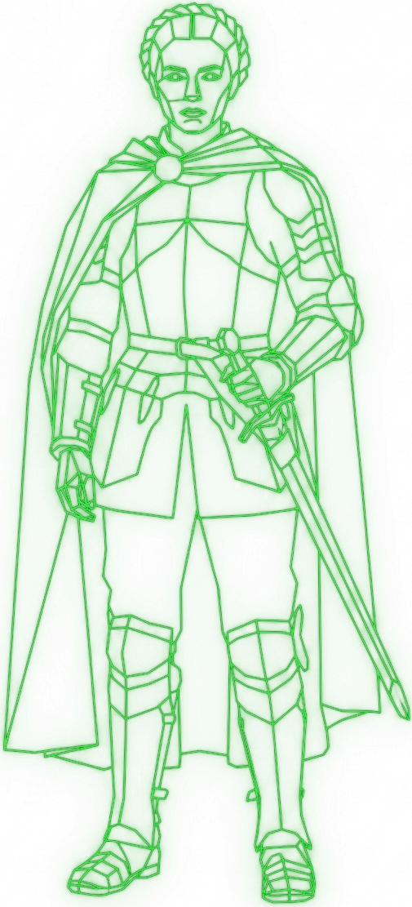
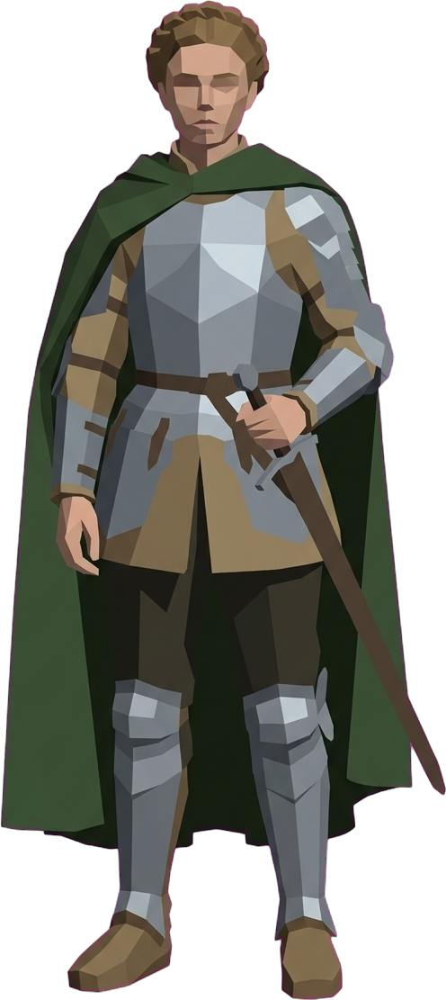
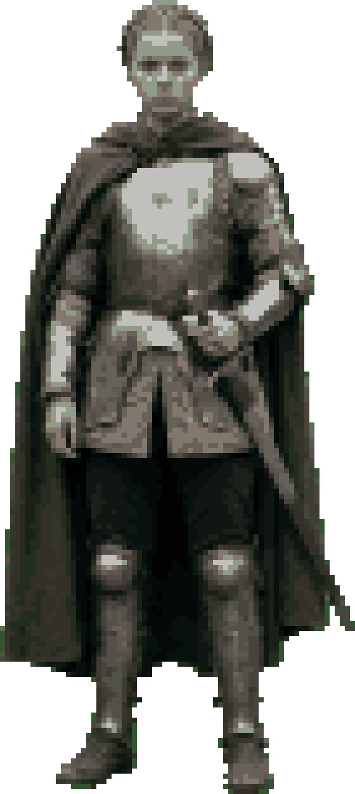
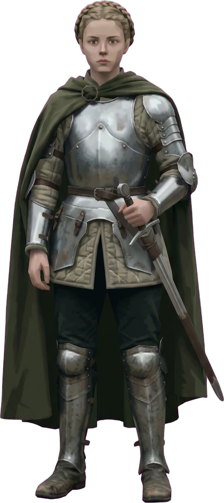
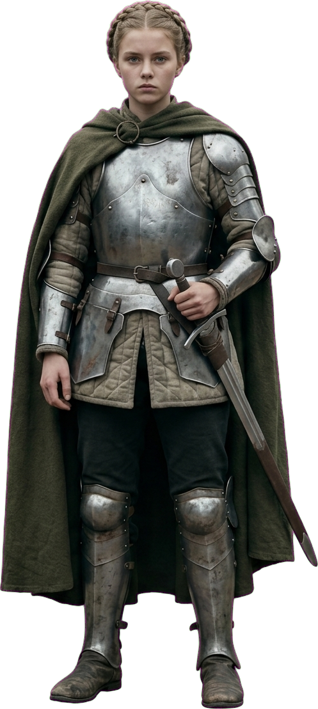

Geschichte
Die Verfahren aus den letzten Kapiteln sind nicht auf einmal entstanden. Jede Stufe war die beste Antwort auf die Rechenleistung ihrer Zeit, und fast immer steckte eine algorithmische Idee dahinter.
Nur Linien
Die ersten 3D-Spiele wie Battlezone (1980) zeichnen nur die Kanten der Körper. Dafür genügen Kapitel 1 und die Projektion aus Kapitel 4: Eckpunkte drehen, projizieren, mit Linien verbinden. Flächen zu füllen war zu teuer, denn jedes gefüllte Pixel kostet Rechenzeit.
Aufwand: wächst mit der Zahl der Kanten, nicht der Pixel.

Gefüllte Flächen
Mit schnelleren Prozessoren werden die Dreiecke einfarbig gefüllt. Was vorn liegt, entscheidet der Maleralgorithmus: Die Dreiecke werden nach Entfernung sortiert und von hinten nach vorn gezeichnet, sodass nahe Flächen ferne übermalen. Das Sortieren kostet O(n · log n) und liefert Fehler, wenn sich Dreiecke durchdringen. Einen Tiefenpuffer konnte sich niemand leisten, er hätte zu viel Speicher gebraucht.

Der Trick mit dem Grundriss
Wolfenstein 3D (1992) wirkt räumlich, rechnet aber in 2D. Die Welt ist ein Grundriss aus quadratischen Feldern. Für jede Bildspalte wird ein Strahl durch den Grundriss verfolgt, bis er auf eine Wand trifft. Je weiter die Wand entfernt ist, desto niedriger wird die Spalte gezeichnet.
for spalte in range(breite):
winkel = blickrichtung + (spalte / breite - 0.5) * sichtfeld
d = 0
while karte[int(y + d * sin(winkel))][int(x + d * cos(winkel))] != WAND:
d = d + schritt
zeichne_wandstreifen(spalte, hoehe = bildhoehe / d)Aufwand: ein Strahl pro Spalte, bei 320 Spalten also 320 Strahlen statt 64 000 Pixel. Der Preis: alle Wände gleich hoch, keine Räume übereinander. Doom (1993) lockerte diese Grenzen mit einer vorab berechneten Baumstruktur, die die Wände in der richtigen Reihenfolge liefert.
Echtes 3D mit Texturen
Quake (1996) baut Räume und Figuren vollständig aus texturierten Dreiecken, mit Rasterisierung und Tiefenvergleich wie in Kapitel 4. Möglich wird das durch Vorberechnung: Welche Räume von wo aus überhaupt sichtbar sind und wie das Licht auf den Wänden liegt, wird beim Erstellen der Level ausgerechnet und gespeichert. Zur Laufzeit wird nur nachgeschlagen.
Idee: Rechenzeit gegen Speicher tauschen.

Grafikkarten
Ab 1996 übernehmen eigene Grafikkarten die Rasterisierung, ab 1999 auch die Projektion der Eckpunkte. Die Verfahren bleiben dieselben, aber sie laufen jetzt parallel für viele Pixel gleichzeitig. Seit 2001 lassen sich die Berechnungen pro Eckpunkt und pro Pixel frei programmieren. Diese kleinen Programme heißen Shader. Damit werden Beleuchtung pro Pixel und Schatten aus Sicht der Lichtquelle zum Standard.

Raytracing in Echtzeit
Seit 2018 enthalten Grafikkarten Schaltungen, die den Schnitt von Strahlen mit dem Baum aus Hüllkörpern beschleunigen. Spiele kombinieren seitdem beide Verfahren: Rasterisierung für das Grundbild, Raytracing für Schatten, Spiegelungen und indirektes Licht. Weil nur wenige Strahlen pro Pixel bezahlbar sind, wird das verrauschte Ergebnis anschließend geglättet.

- Weil keines der beiden vollständig vor dem anderen liegt.
- Weil Sortieren zu langsam ist.
- Weil Dreiecke keine Farbe haben.